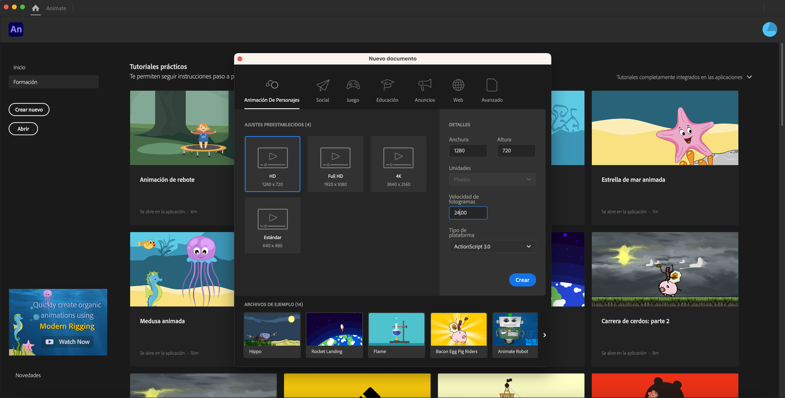
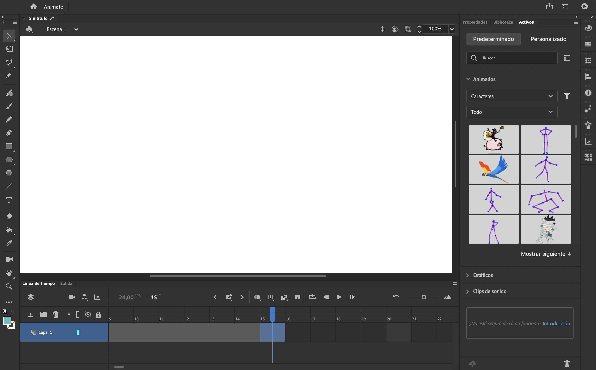
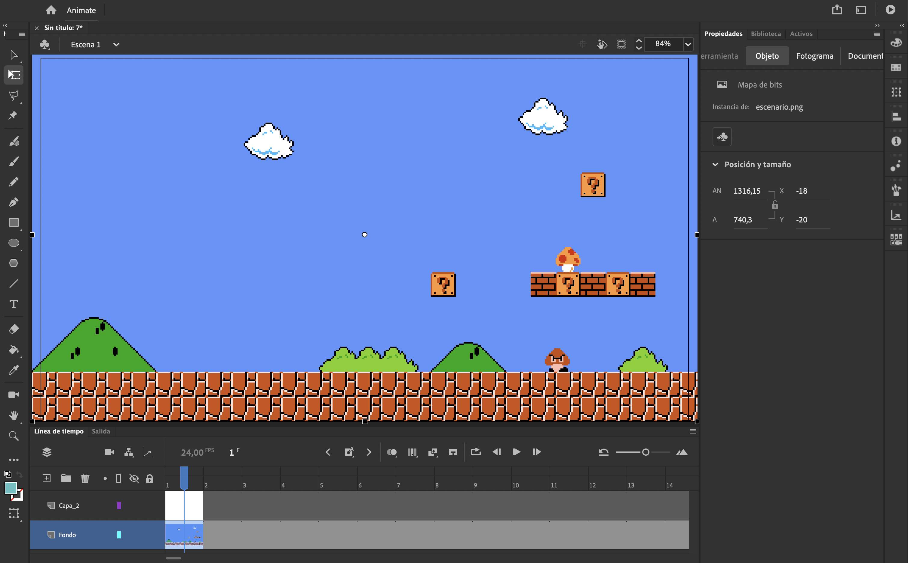
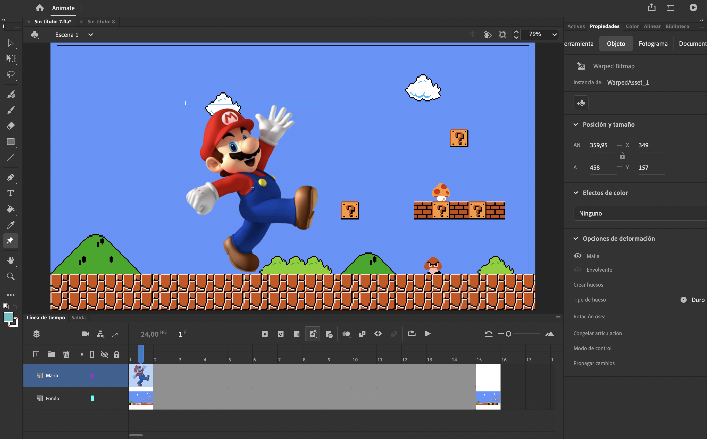
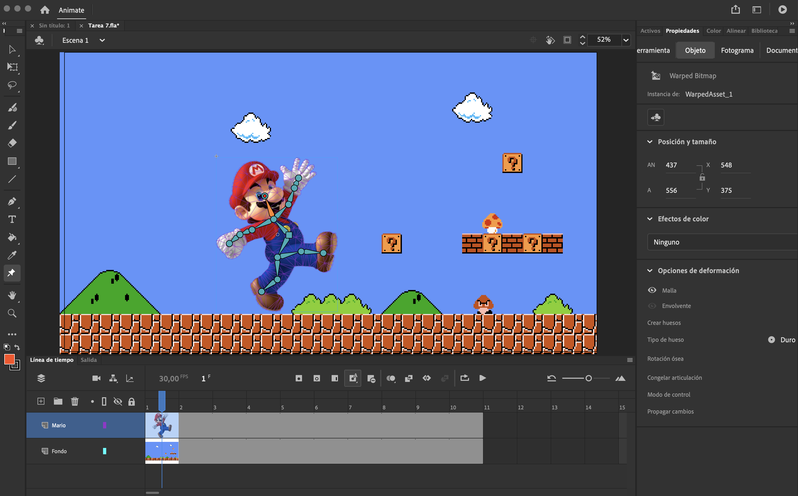
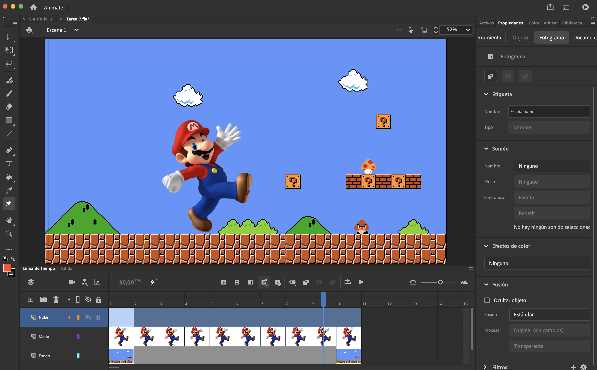
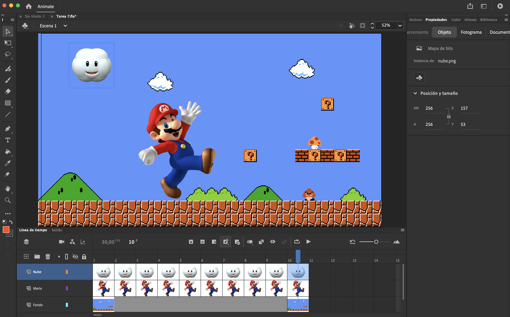
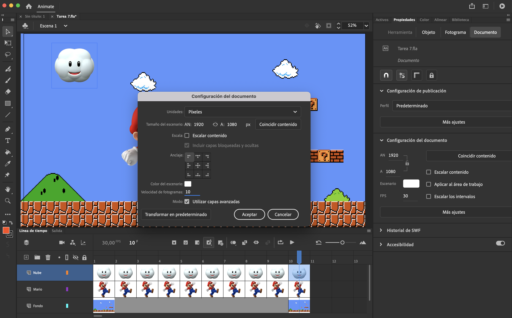
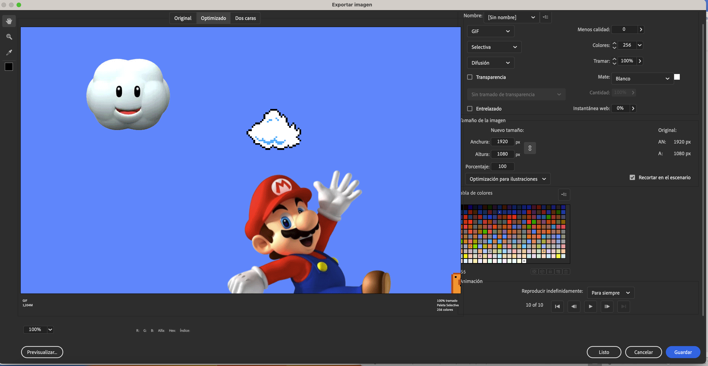
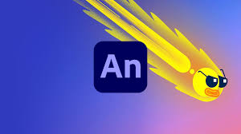

PROCESO DE CREACIÓN

1- Creamos el lienzo de trabajo eligiendo el formato y el número de fps.

2- Creamos los fotogramas. Elegimos el número de fotogramas (pulsamos en el fotograma final y F5).

3- Creamos una capa adicional donde colocamos el fondo.

4- En la primera capa colocamos a Mario.
5- Ajustamos el tamaño de Mario.

6- Con la herramienta de deformación marcamos las articulaciones del personaje.
7- Modificamos el sujeto en los distintos fotogramas.

8- Creamos una capa para colocar la nube.

9- Creamos los distintos fotogramas con las posiciones de la nube.

10- Ajustamos el número de fotogramas final.

11- Exportamos a formato gif.
OPINIÓN SOBRE ADOBE ANIMATE

Adobe Animate es una herramienta muy potente para crear animaciones. Tiene una interfaz de trabajo muy agradable e intuitiva, con muchas opciones para crear animaciones de todo tipo. Se pueden obtener resultados muy profesionales.
MEJOR OPCIÓN PARA AÑADIR ANIMACIONES "PERSONALIZADAS"
Para añadir animaciones personalizadas a una página web, nos encontraremos con multitud de opciones, de mayor a menor complejidad. Como en todo, siempre dependerá del caso de uso y de la finalidad, optar por una opción u otra. Animaciones complejas o abusar en su uso, supone un impacto en la velocidad de carga de la página, ejecuciones defectuosas en equipos con pocos recursos, etc.. Podemos crear animaciones de forma nativa con css (keyframes, transitions,...) o javascript, o recurrir a software y librerías externas como Adobe Animate, Gsap, Threejs, Pixijs, Haiku Animator, Animated Backgrounds, Animxyz, Granim.js, etc.